> ARCHIVE.LOG // 2016 — 2017
Projetos Gráficos
Portfólio de Design Gráfico // Era Pré-IA
Uma coleção de trabalhos de design gráfico, identidade visual e diagramação produzidos entre 2016 e 2017 — totalmente desenhados à mão e em softwares como Photoshop, Illustrator e CorelDRAW, sem o uso de ferramentas de inteligência artificial generativa. Um registro do processo criativo manual que antecedeu a era da IA.
Arquivo
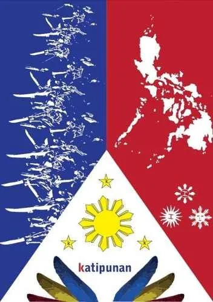
Capa de Livro — Katipunan
2016Capa ilustrativa para obra sobre a Katipunan filipina, com bandeiras, símbolos patrióticos e tipografia desenhada à mão.
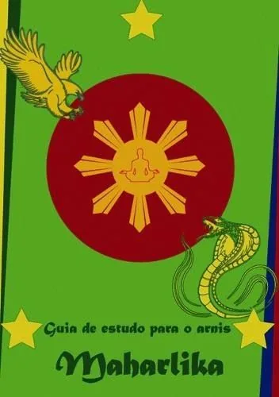
Guia de Estudo — Arnis Maharlika
2016Capa de material didático para artes marciais filipinas (Arnis), com ilustração vetorial de águia, cobra e brasão solar.
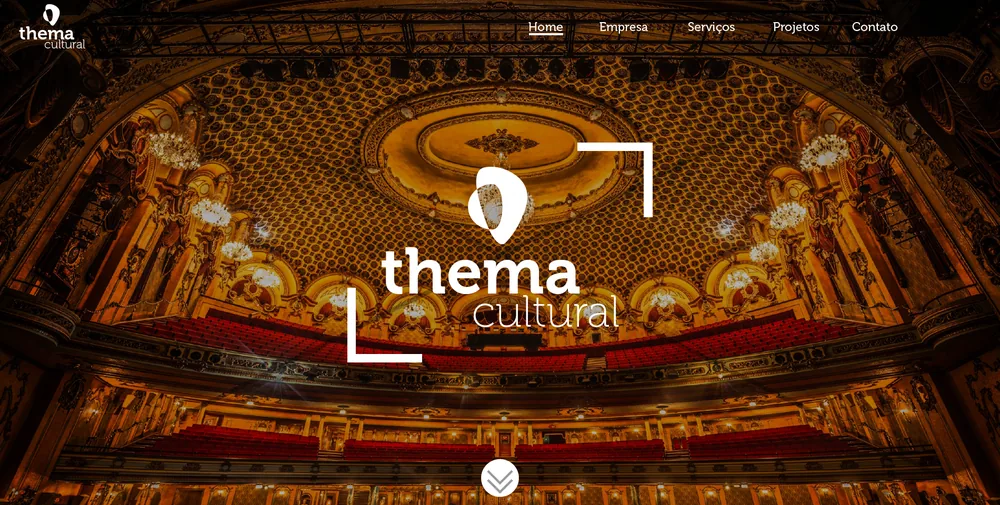
Layout — Thema Cultural
2016Página inicial para site institucional de produtora cultural, com identidade visual elegante sobre foto de teatro.
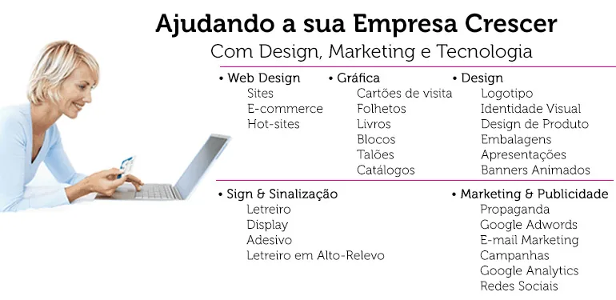
E-mail Marketing — Agência de Design
2016Peça de e-mail marketing apresentando o portfólio de serviços de uma agência: web design, gráfica, sinalização e marketing.
Apresentação Institucional — Onideia
2016Slides de apresentação institucional para agência de publicidade, com capa, sumário e estrutura visual da marca.
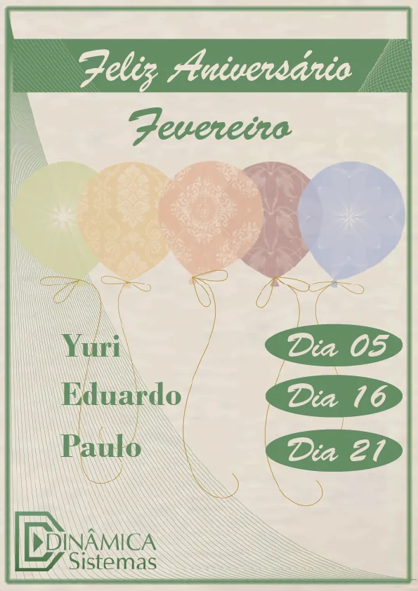
Banner Interno — Aniversariantes
2016Banner comemorativo para mural interno de empresa, celebrando os aniversariantes do mês.
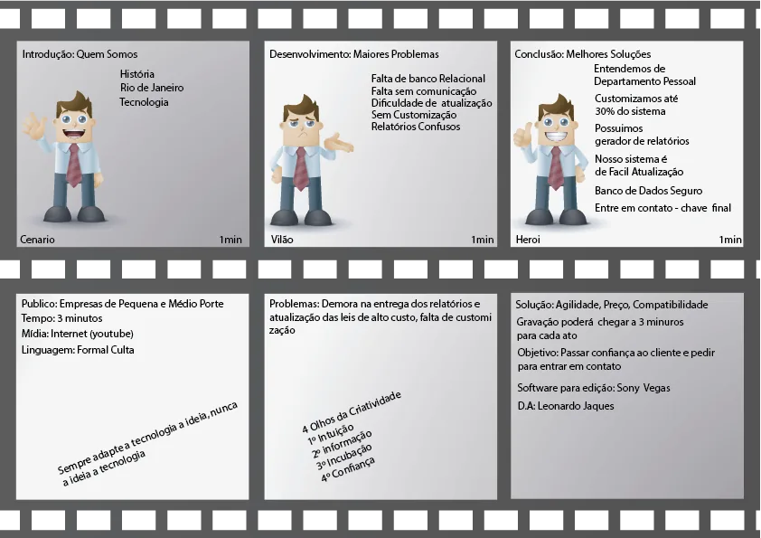
Storyboard — Vídeo Institucional
2016Roteiro visual quadro a quadro para vídeo institucional, planejando cenas, falas e tempos de gravação.
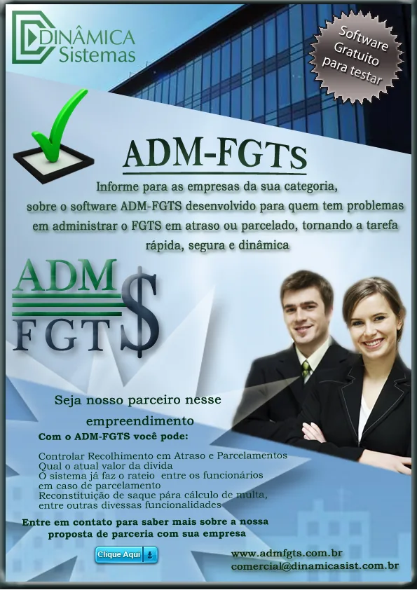
Folder A4 — Sistema ADM-FGTS
2016Material impresso de divulgação para sistema de gestão de FGTS, com arte de capa, miolo e contracapa.
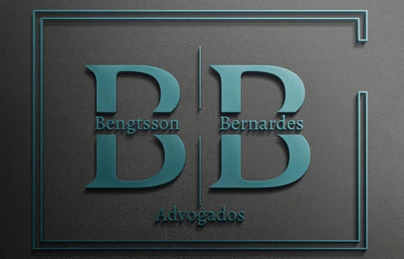
Identidade Visual — Bengtsson & Bernardes Advogados
2017Estudo de logotipo para escritório de advocacia, partindo de esboços manuais até a versão final em alto-relevo.
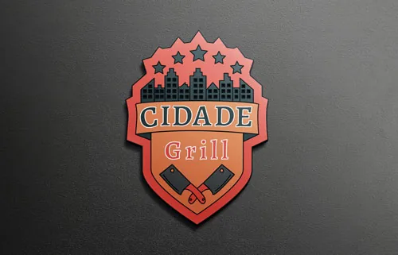
Logotipo — Cidade Grill
2017Brasão para hamburgueria/churrascaria, combinando skyline urbano, estrelas e talheres em estilo crachá 3D.
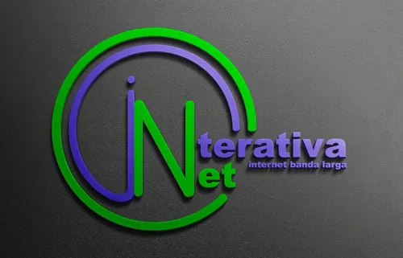
Logotipo — Interativa Net
2017Identidade visual para provedor de internet banda larga, com tipografia em gradiente verde/azul e formas circulares.
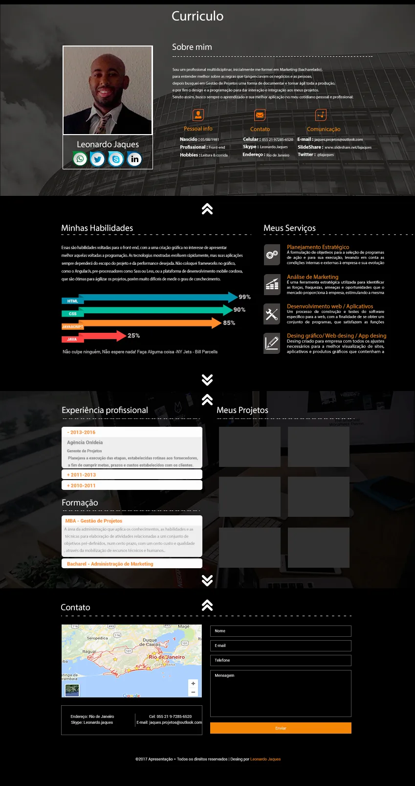
Currículo Online
2017Site de currículo pessoal em página única, com seções de habilidades, experiência, projetos e contato.